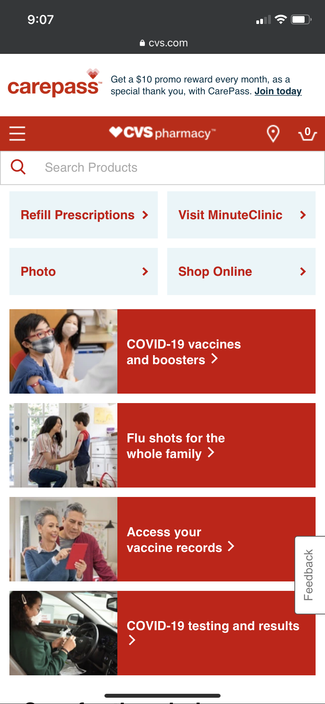

Hick's Law - Little Caesars
Little Caesars implements a great example of Hick's Law by minimizing the options available to the user. Instead of making the user's first decision difficult by displaying the different food items available, they make the user's decision easy by making the options either delivery or pickup
Proximity - Church of Jesus Christ

The Church of Jesus Christ makes it easy to navigate their website by implementing the principle of proximity. Titles overlap images so that users can make connections between the text and image.
Alignment - CVS
CVS uses alignment to connect elements. Towards the top of the page, they have general information that most people will use when they visit the site. The next section has vaccination information for COVID and the flu. This structure makes it easy for users to find what they're looking for.